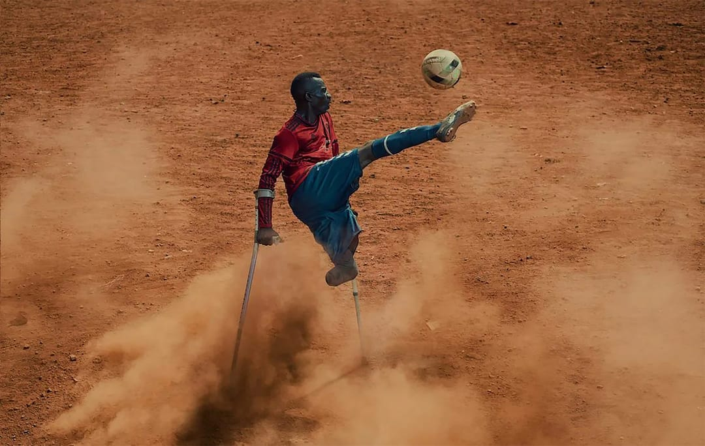

There is no greater disability in society than the inability to see a person as more.
Robert M. Hensel
Growing up Nigerian, I am always moved when I see disabled people on our streets daily. From the weary upper limb amputee soliciting for alms to happy-go-lucky Uncle Fyneface dazzling us with his football skills as he juggled the ball with his remaining leg and hopped on his locally-made wooden crutch, I wondered how everyday life was for them. As a kid, I knew no better and could only offer my sympathy and, on occasions when my mother heeded my pleas, some spare change I saw around.

Becoming an adult meant realizing my privilege as an able-bodied person, developing empathy for these people and thinking of ways to help them. Being a designer meant realizing the current Nigerian society is not built with consideration for the disabled, with some of us seeing them as less. While I can’t change what is now, I hope I can educate more people to look at society from the perspective of a disabled person and build for the Nigerian future with them in mind.
What Is a Disability?
A disability, according to the Centers for Disease Control and Prevention, is any condition of the body or mind that makes it more difficult for the person to do certain activities and interact with the world around them. This includes intellectual, physical, sensory, and mental impairments that substantially limit the ability to carry out major life activities, either short-term or long-term.
Disabilities are, sadly, much more common in our society than we would like to believe. Over one billion people worldwide have a disability, with at least 93 million under 15 years. As much as the prevalence of disability is not the same across the world, there is not enough emphasis on how bad the situation is in developing countries.
In October/November 2019, while applying to schools abroad for a Master’s degree scholarship, I learnt that 1 in 10 Nigerians live with some form of disability. I later came across a 2018 World Health Organisation report, which showed figures for the African countries with the highest number of persons with disabilities (PWDs). The figures are:
- Zambia (11.9%),
- Nigeria (11.6%),
- Ethiopia (11.6%),
- Malawi (11.4%),
- the Democratic Republic of Congo (11.3%),
- Kenya (10.8%),
- Uganda (10.3%),
- Burundi (10.3%), and
- Rwanda (10.1%).
This means that in the country with the most substantial population on the African continent (an estimated 200 million people), at least 20 million Nigerians live with either a physical, sensory, cognitive, or intellectual impairment that limits their ability to carry out their major life activities. Ever since then, I have been intrigued by what disability means to us as a society, how we can build for the disabled and what able-bodied people gain from building inclusively for the disabled.
To understand and build for the disabled, we have to realise that disability is diverse and intersectional. This means it can affect us all in some way, directly or indirectly, and at any time. To fully understand this, let’s look at the three types of disability: permanent disability, temporary disability and situational disability.
- Permanent disability: A permanent disability is a long-lasting impairment in one’s physical, mental, sensory, or cognitive functions. It significantly restricts an individual’s ability to perform certain activities or tasks. These disabilities typically result from congenital conditions, injuries, or chronic illnesses that do not have a prognosis for complete recovery. People with permanent disabilities often require ongoing accommodations, assistive devices, or support systems to enhance their quality of life and promote equal participation in society, highlighting the importance of accessibility and inclusivity.
- Temporary disability: A temporary disability is a short-lived impairment in physical or mental function that limits a person’s abilities for a relatively brief period. These disabilities can result from injuries, illnesses, surgeries, or medical conditions expected to improve over time. An example is the healing of a broken bone after an accident.
- Situational disability: A situational disability refers to a temporary impairment that affects a person’s ability to perform certain tasks or activities in specific situations. Unlike permanent disabilities, situational disabilities are often short-term and context-dependent. Examples of situational disabilities include struggling to read small text in low-light conditions (1), trying to use a phone while breastfeeding (2) and being unable to listen to videos because you’re dealing with an ear infection (3). I used these everyday examples because we can imagine what current technology can prove assistive in these different scenarios, such as using a screen reader in example 1, setting up hands-free mode in example 2 and using live captions in example 3.
By looking at these types of disabilities, we can highlight the importance of designing environments and technologies that accommodate various situational needs, promoting accessibility for all, regardless of their challenges.

Accessibility allows us to tap into everyone’s potential.
Debra Ruh
Why Accessibility is Important
Accessibility can be defined in several different ways. It means removing any barriers that might prevent persons with disabilities from being able to access technology, information, or experiences and levelling the playing field to give everyone an equal chance of enjoying life and being successful.
Accessibility is not just designing to include a group of users with varying abilities. Instead, it extends to anyone experiencing a permanent, temporary, or situational disability. When you create solutions for persons with disabilities, you are not only serving the critical audience of people with permanent disabilities but also unlocking secondary benefits for everyone who may move in and out of disability over time.
Did you know that many technologies that we enjoy started as an accessibility feature? Even some of our best inventions were inspired by the disabled. For example:
- The typewriter (which has evolved into the keyboard on our digital devices) was built by Pellegrino Turri in 1808 so his blind friend, Countess Carolina Fantoni da Fivizzano could write letters more legibly.
- In 1872, Alexander Graham Bell fathered the telephone to support his work helping and teaching the deaf. He conceived the idea of electronic speech while visiting his hearing-impaired mother in Canada.
- In 1972, Vinton Cerf (one of the fathers of the internet) created the first protocols that allowed users with different email providers to communicate with each other because he believed electronic messaging was the best way to communicate with his deaf wife. Before his invention, users could only communicate if they used the same email provider. Thanks to the need to make communication with a disabled partner easy, we all can now easily communicate via email. Imagine how life would have been without the protocols he created.
- A more recent example is Project Euphonia, a Google Research initiative focused on helping people with non-standard speech/speech impairments be better understood. The approach is centred on analyzing speech recordings to better train speech recognition models. Whether directly or indirectly, the models created from this project have influenced the speech recognition models that Google Assistant runs on, therefore making life easier for not just those with speech impairments but for the able-bodied as well.
Design for All People
Building a world that not only includes but also caters for the disabled is not just a responsibility but a moral obligation. As a designer, you should ask yourself two crucial questions before embarking on any task/project:
- Who am I designing for?
- Are there any physical or social limitations that would affect how my audience interacts with this design?
As a brand/graphic/visual designer, think beyond aesthetics. When selecting colours, do you consider the accessibility of your colour palette to colour-blind people? How will your design look to people with protanopia (unable to perceive any red light), deuteranopia (unable to perceive any green light) or tritanopia (unable to perceive any blue light)? Prioritize clear typography; use legible fonts and ensure text is resizable without loss of content or functionality.
As a packaging designer, do you consider how the visually impaired will properly interact with all aspects of your product? What existing methods, practices or technologies can make that product a more wholesome experience for a disabled person? Imagine the tactile journey for the visually impaired; create experiences, not just products.
As an educator, how do you prioritize inclusivity in your classes? Do you know any sign languages? Do you upload your video content with legible captions so the hearing-impaired can adequately follow?
As an architect, place accessibility at the heart of your designs. Consider how a wheelchair user or an aged person will access the spaces you’re designing. The same processes should be applied to creating accessible wayfinding designs and emergency exits that are tailored to aiding disabled people. Many Nigerian spaces treat disabled access as an afterthought; let’s start doing it differently.
As a developer, create digital experiences that are welcoming to all users. Make sure applications and websites are usable by people with disabilities. If possible, test with screen readers and keyboard navigation. Ensure all interactive elements can be accessed and operated using only a keyboard.
As a town planner, you also have a role to play. From designing wide curb cuts for wheelchair access to creating walkway ramps that can comfortably accommodate a disabled person and an able-bodied person walking side-by-side to accessible public transport, you can make your city/town more disability-friendly.
Even in our daily lives, doing things like using ALT text properly to allow the visually impaired to understand the context of your new favourite picture on Twitter or Instagram can make a difference. Not only does it allow inclusive participation for the disabled, but it also aids in bettering your Google searches.
These are just a few examples of why accessibility should matter to all of us. We all have a role to play in building inclusive societies, no matter our profession, location or lifestyle. Where others see a disability, see inspiration to solve a design problem. By empathizing with the problems of others, we might create things we otherwise wouldn’t have created for ourselves.
By designing for people with disabilities in mind, we can create better products for everyone else.
Selah.
Where to Start
Here are some valuable tools to get you started on designing for accessibility:
- ColorOracle, a free color blindness simulator that applies a full screen colour filter to your screen to mimic it would look to different types of colour-blind people.
If you’re interested in learning more about designing for accessibility, check out the following resources:
- Disability Technology, a TEDx Talk by Jeff Paradee.
- Inclusive Design: 12 Ways to Design for Everyone, an article by Oliver Lindberg for Shopify.
- Accessibility Fundamentals Overview by W3C.
- User Friendly: How the Hidden Rules of Design Are Changing the Way We Live, Work, and Play, a book by Cliff Kuang & Robert Fabricant. You can get this from your local bookstore.
- The book Disability Friendly: How to Move from Clueless to Inclusive by John D. Kemp.
- Publications on Google’s Project Euphonia.
- Healed through A.I., episode 2 of the first season of the YouTube Originals series, The Age of A.I.
Have you ever encountered a situation where a lack of accessibility affected someone’s daily life? Tell me about it.